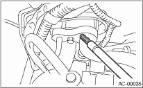
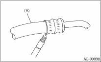
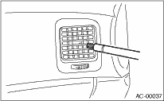
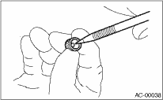

HVAC SYSTEM (HEATER, VENTILATOR AND A/C) > Refrigerant Leak Check
1. Operate the A/C system for approx. 10 minutes, and check that the high-side pressure shows at least 690 kPa (7.03 kg/cm2, 100 psi). Then stop the engine to start the leak test.
2. Starting from the connection between high-pressure pipe and evaporator, check the system for leaks along the high-pressure side through the compressor. The following items must be checked thoroughly.
3. Check the joint and seam between pressure switch (triple pressure switch) and high-pressure pipe.
4. Check the connections between condenser and pipes, and welded joints on the condenser.
The leak tester may detect the oil on the condenser fins as a leak.
5. Check the joint between compressor and hoses.
6. Check the machined area of the compressor and other joints on the compressor.
7. Check the compressor shaft seal at the area near the center of compressor clutch pulley.
Some shaft seals will show a slight amount of leakage, about 10 g (0.4 oz) per year. This is not a problem.
8. Starting from the connection between low-pressure pipe and evaporator, check the system for leakage along the low-pressure side through the compressor. The following items must be checked thoroughly.
• Connection between 2 parts
• Connection between pipe and plate

9. Visually check the rubber area of the flexible hose for cracks.
Check the entire length of the flexible hose, especially the connection with the metal hose end.
CAUTION:
Carefully check the external surface of hoses and tubes at approx. 25 mm (0.98 in) per second.

|
(A) |
Flexible hose |
10. Disconnect the drain hose from the heater case, and check the hose end for at least 10 seconds.
After the test is finished, reconnect the drain hose.
11. Turn the ignition key to the ON position, and run the blower at high speed for approx. 1 minute. Stop the blower to check the ventilation grille on the instrument panel. While moving the tester closer to the grille, run the blower for 1 or 2 seconds, then stop it. Check the grille at that position for at least 10 seconds.

12. Check the valve in the service port.
13. Visually check the rubber seal in the service port cap.
